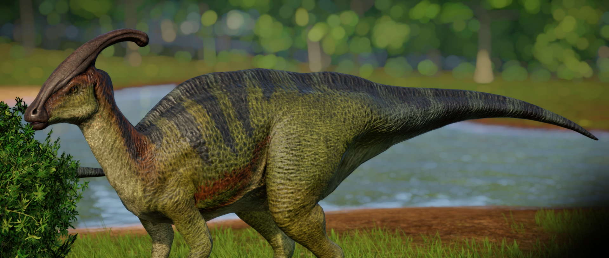

O Parassaurolofo é um hadrossaurídeo herbívoro nativo da América do Norte, famoso por sua crista única, que se estende desde a parte de trás da cabeça. Esta crista distinta deu ao dinossauro seu nome, que se traduz como “lagarto de cristas paralelas”. Ele cresce até cerca de 7,5 m de comprimento e, embora geralmente ande sobre quatro pernas, pode levantar-se sobre duas pernas se precisar correr ou alcançar comida em lugares altos.